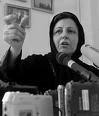

پذيرش > تریبون > گفت و گو > اگر لايحه به صحن علنی بیاید برای اعتراض به آن در مقابل مجلس متحصن خواهیم (...)
 گفتگو با شيرين عبادي گفتگو با شيرين عبادي

 اگر لايحه به صحن علنی بیاید برای اعتراض به آن در مقابل مجلس متحصن خواهیم شد اگر لايحه به صحن علنی بیاید برای اعتراض به آن در مقابل مجلس متحصن خواهیم شد
31 تیر 1387 - آيدا سعادت - نسخه قابل چاپ
اين روزها شاهد طرح و تصويب لوايحي در مجلس هشتم هستيم، که مورد اعتراض فعالان حقوق زن و حقوق بشر قرار گرفته است. از جمله لايحه حمايت از خانواده که از سوي اين فعالان لايحه ضد خانواده هم لقب گرفته است. سال گذشته همزمان با ارائه اين لايحه به مجلس اعتراضات زيادي در اين باره از سوي طيف هاي مختلف فعالين زن صورت گرفت و بيانيه اي با دوهزار امضا در مخالفت با آن منتشر شد. امسال و در ماههاي نخست فعاليت مجلس هشتم اين لايحه بار ديگر در دستور کار کميسيونهاي مجلس قرار گرفته است . در اين زمينه گفتگويي با خانم شيرين عبادي داشته ايم و نظر ايشان را در اين رابطه جويا شده ايم :
همانطور که می دانید لایحه حمایت از خانواده در کمیسیون قضائی مجلس بدون هیچ گونه تغییری به تصویب رسید و به نظر می رسد که به زودی برای تصویب نهایی به صحن علنی مجلس شورای اسلامی ارائه شود. محتوای این لایحه و مواردی همچون ماده جنجال بر انگیز 23 که توسط دولت افزوده شده است واز سوی کمیسیون قضایی مجلس هم عنوان شده که این ماده کاملا شرعی است. در کل تاثیرات تصویب چنین لایحه ای را چه می دانید؟
طرح جدید قانون خانواده در حقیقت نه تنها کمکی به ثبات خانواده نمی کند، بلکه گامی در جهت تزلزل ارکان خانواده خواهد بود. طبق این قانون شرط موافقت همسر اول، برای ازدواج دوم و سوم مردان حذف شده و دادگاه در صورتی اجازه ازدواج دوم یا سوم را خواهد داد که زوج بتواند تمکن مالی و همچنین امکان اجرای عدالت بین همسران خود را بر دادگاه ثابت کند. با توجه به این که این اجازه ی دادگاه باید قبل از وقوع ازدواج دوم صورت بگیرد، مهمترین سوال این است که چگونه دادگاه می تواند اجرای عدالت را بین همسر اول و زنی که هنوز به عقد زوجیت در نیامده است احراز کند. با این ترتیب این شرط غیر ممکن خواهد بود و تنها جمله ای بی معنا روی کاغذ باقی می ماند و شرط دیگر یعنی تمکن مرد قابل اثبات است و مرد می تواند با نشان دادن حساب بانکی و قباله های ملکی خود تمکن خویش را بر دادگاه ثابت کند. خلاصه ی این ماده این است که هر مردی که ثروت داشته باشد می تواند به هوس های خود جنبه ی قانونی بخشیده و از دادگاه اجازه ازدواج با همسر دوم یا سوم را بگیرد و شرط اجرای عدالت عملاً به فراموشی سپرده خواهد شد. بنا بر این بر خلاف آنچه که در کمیسیون قضائی مجلس مطرح شده که این طرح خصوصا ماده ی 23 مطابق اسلام است، باید بگویم که اصلا چنین مساله ای نیست. زیرا قبل از اسلام تعدد زوجات در حد چهل یا پنجاه همسر هم بین اعراب متداول بوده و اسلام این امر را به چهار همسر محدود کرده و آن هم به شرطی که عدالت اجرا شود و در آیه ای از قران کریم خطاب به مردم فرموده شما هرگز نمی توانید عدالت را اجرا کنید. به این ترتیب در حقیقت نظریه ی اسلام مبتنی بر تک همسری بوده است و اگر در مواقعی بنا بر ضرورت مانند جنگ هایی که در صدر اسلام صورت می گرفته پیش بیاید که تعداد زنان نسبت بسیار بیش از مردان باشد چنین راه حلی مانند دارویی برای مداوای اجتماع پذیرفته شده است. اما در شرایط عادی اساساً با توجه به این که قرآن هم فرموده که شما نمی توانید عدالت را اجرا کنید پس نظر شارع تاکید بر تک همسری بوده است.
موارد دیگری که در لایحه آمده است از جمله وضع مالیات بر مهریه را چطور ارزیابی می کنید؟
مشکل دیگر این لایحه آن است که بر مهریه ی تعیین شده مالیات تعلق می گیرد و با این ترتیب مانعی در راه تعیین مهریه بالا ایجاد شده. من به شخصه با مهریه ی بالا برای دختران مسلمان مخالف هستم. خود نیز دخترم را فقط با 5 سکه مهریه شوهر دادم. اما قانونگذاران مرد باید بدانند اگر گاهی از اوقات برخی از خانواده ها مهریه های سنگینی برای دختران خود مطالبه می کنند به دلیل قوانین تبعض آمیز علیه زنان است. در جامعه ای که مرد می تواند بدون عذر موجه زنش را طلاق دهد و می تواند چهار همسر عقدی و الی ماشاءالله زن صیغه ای بگیرد، در جامعه ای که سفر کردن زن موکول است به موافقت کتبی شوهر و ... درچنین شرایطی می بینیم که طلاق گرفتن برای زنان بسیار دشوار و گاه غیر ممکن است. بنا براین برخی از خانواده ها چنین می اندیشند که با تعیین مهریه ی بالا و سنگین می توانند مانع از ظلم احتمالی شوهر به دخترشان شوند و بر همین مبنا مهریه تعیین می کنند. حال آنکه اگر قوانین برابری کامل حقوق زن و مرد را در بر داشت و زنان همانگونه که مردان آزاد هستند برای طلاق این آزادی را داشتند ویا بالعکس، مردان هم برای طلاق همان محدودیت زنان را داشتند، مسلما هیچ خانواده ای نیازی نمی دید که مهریه سنگینی تعیین کند. بنا براین اگر قانونگذاران مرد بر این اعتقادند که می بایستی تعیین مهریه سنگین از فرهنگ ایرانی حذف شود راه آن مالیات گرفتن از مهریه هنگام ازدواج نیست. بلکه راه آن اصلاح قوانین تبعیض آمیزی است که علیه زنان این کشور به تصویب رسیده است. از جمله وقتی مردی ایرانی با زنی مثلا اروپایی زندگی می کند احتیاج به هیچ اجازه ای ندارد و کافی است او را به عقد خود در آورد و فرزندان او ایرانی شناخته می شوند و شناسنامه ایرانی می گیرند. اما یک دخترایرانی وقتی می خواهد همسری غیر ایرانی انتخاب کند بایستی از دولت جمهوری اسلامی ایران اجازه بگیرد و فرزندان او نیز ایرانی شناخته نمی شوند و هر زمان که این زن به همراه جگر گوشه های خود به ایران بیاید، باید مانند یک غیر ایرانی برای فرزندان خود تقاضای ویزا کند. در کجای اسلام مساله ای به نام تابعیت و ویزا وجود داشته که دولتمردان می خواهند تمامی قوانین ضد زن در ایران را منتسب به اسلام کنند؟ این قوانین ناشی از فرهنگ پدر سالار است که تفسیر خود را از هر موضوعی ارائه می کند و طرح جدید قانون حمایت خانواده نیز در پرتو همین فرهنگ نوشته شده.
در مرحله اول که این لایحه به مجلس ارائه شده شاهد اعتراضات گسترده ای از طرف طیف های مختلف فعال اجتماعی و صاحبنظران و حقوقدانان بودیم. به نظر شما چرا با وجود این اعتراضات مجلس توجهی نشان نداد ؟
این قانون که متاسفانه امضای برخی از زنان نماینده مجلس از جمله خانم فاطمه آلیا را در ذیل آن می بنیم و همچنین توسط رئیس مرکز امور خانواده دولت ،خانم طبیب زاده نوری، نسبت به آن موضع گیری مثبت شده است باعث تعجب است. زیرا این لایحه نه تنها حقوق زن در خانواده را پایمال می کند، نه تنها به مردان ثروتمند و نو کیسه اجازه می دهد هوسرانی خود را جنبه ی قانونی بخشند، نه تنها ارکان خانواده را متزلزل می سازد، بلکه مخالف روح والای اسلام است زیرا شرط اجرای عدالت را به صورتی که قبلاً توضیح دادم از بین می برد.
سال گذشته که این لایحه مطرح شد شما در مصاحبه ای اعلام کردید که در صورت ارائه شدن آن به مجلس برای تصویب در مقابل مجلس تحصن می کنید. آیا هنوز بر این تصمیم اصراردارید؟
امیدوارم هیأت رئیسه مجلس با هوشیاری و درایت مانع از طرح چنین قانونی در صحن علنی شوند و اجازه ندهند که برای تصمیم گیری در نوبت قرار گیرد و چنانچه این لایحه روزی برای تصمیم گیری به صحن علنی بیاید در آن صورت همانگونه که قبلا هم اعلام کرده ام زنان ایران، از جمله شخص بنده، برای اعتراض به این لایحه در مجلس شورای اسلامی متحصن خواهیم شد. تحت هیچ شرایطی نمی توان به قرن ها قبل باز گشت.
لوایح دیگری به صورت هم ارز با این لایحه به مجلس شورای اسلامی ارائه شده اند. از جمله قانون مجازات اسلامی و لایحه تشدید مجازات اخلال کنندگان امنیت روانی . به نظر شما ارائه چنین لوایحی به مجلس و تصویب این ها به صورت قانون چه فلسفه ای دارد؟ اصل بر آن است که قانون همواره باید از فرهنگ اجتماع جلوتر حرکت کند و تحول گرا و اصلاح گرا باشد. چه اصراری هست بر این که ما شاهد عقب گرد در قانون باشیم ؟
متاسفانه همزمان با این قانون حمایت از خانواده طرح قانونی دیگری تحت عنوان تشدید مجازات اخلال کنندگان امنیت روانی یک فوریت آن به تصویب رسید که اکنون باید در دستورجلسه قرار بگیرد تا کلیاتش به تصویب برسد. در این طرح می خوانیم که تاسیس وبلاگ و سایت در صورتی که مروج فساد و الحاد باشد در ردیف جرائمی چون تجاوز به عنف و سرقت مسلحانه بوده و مستوجب اعدام است. حال آن که در هیچ کجای قانون فساد و یا الحاد تعریف نشده است و مساله ای به این اهمیت بسته به نظر دادگاه است که البته از یک دادگاه به دادگاه دیگر می تواند تفسیرهای متعدد و گوناگونی داشته باشد.
این قانون ضربه ی مهلکی است بر آزادی بیان و همواره مشکلات اجتماع از جایی شروع می شود که آزادی بیان محدود باشد. زیرا وقتی جامعه ای در بیان خواست های خود و در بیان مشکلات خود آزاد باشد مسلما راه حل نیز پیدا خواهد شد. در ایران مدتی است که دامنه ی سانسور نه تنها شامل روزنامه کتاب شده بلکه به سایت ها نیز رسیده و دستگیری تعدادی از وبلاگ نویس ها در این ارتباط بود .ظاهراً این میزان را هم کافی ندانسته اند و در صدد این برآمده اند که قلم را وسیله ای خطرناک دانسته و نویسندگان را با ادعای ترویج فساد و الحاد به پای چوبه ی دار بفرستند و امنیت قضائی شهروندان و آزادی بیان را محدود تر کند.
در صورت تصویب چنین لوایحی با توجه به اعتراضات گسترده ای که شده است مردم چه حرکتی می توانند بکنند و نقش مردم را در این جریان چطور می بینید؟
طبیعی است که در مقابل چنین قوانینی که امنیت قضائی را صدمه می زند و با حقوق بشر در تضاد است می بایستی به طرق مدنی مبارزه کرد. منظور من از طرق مدنی هر راه ممکن غیر خشونت آمیز است و عنوان این مساله که چون ما در شرایط بحران به سر می بریم و سه قطعنامه در شورای امنیت سازمان ملل متحد علیه ایران صادر شده بنا براین ما باید اعتراضات خود را فراموش کنیم تا بحران حل شود اینها مجوز سکوت ما نخواهد بود. زیرا که بر این اعتقادم که در صورتی که حقوق بشر در کشور رعایت شود همدلی و وفاق بیشتری بین حکومت و مردم ایجاد خواهند شد و در آن صورت هیچ متجاوزی نمی تواند چشم طمع به سرزمین ما بدوزد. وضعیت زمانی خطرناک خواهد شد که بین مردم و حکومت فاصله بیفتد و این فاصله ها ناشی از نقض حقوق بشر خواهد بود. بنا براین توصیه ی دلسوزانه ی من به مسئولین این است که از تصویب قوانینی که حقوق بشر را بیش از این به مخاطره می اندازد خودداری کنند و اجازه دهند که مردم در کنار دولت و حکومت به دفاع از سرزمین مادری خود برخیزند.
متشکرم
ارسال به
بالاترین
،
توییتر
،
فریندفید
،
فیسبوک
در همين بخش :
 دهمین دورۀ مراسم تندیس صدیقه دولت آبادی ۱۳۹۲ دهمین دورۀ مراسم تندیس صدیقه دولت آبادی ۱۳۹۲
کارت پستالهایی به بهانهی هشت مارس و به یاد همهی مبارزین راه برابری
بیانیه بیش از 350 تن از مدافعان حقوق زنان به مناسبت روز جهانی زن؛ زنان هر روز فرودستتر میشوند
لباسی که برای تن ما دوخته اند! /اعظم بهرامی
چالشها و چشمانداز فعالیت مدنی زنان
ديگر بخش ها :
طرح یک میلیون امضا
|
مقالات
|
سایت نوشته ها
|
اخبار
|
گزارش كمپين
|
گفت و گو
|
علیه سکوت
|
كوچه به كوچه
|
نامه های شما
|
گزارش ویژه
|
گفتگو با اعضا
|
ویژه سالگرد کمپین
|
تصویر برابری
|
دل آرام علی
|
تریبون
|
مقالات
|
تاریخ شفاهی
|
خارج از چارچوب
|
کتابخانه
|
درباره کمپین
|
کمپین در شهرها
|
کمپین در بند
|
صدای تغییر
|
ویژه 22 خرداد
|
لایحه حمایت از خانواده
|
گالری
|
عشا مومنی
|
امیر یعقوبعلی
|
خدیجه مقدم
|
راحله عسگری زاده و نسیم خسروی
|
پروین اردلان،جلوه جواهری، مریم حسین خواه، ناهید کشاورز
|
زینب پیغمبرزاده
|
سعیده امین، سارا ایمانیان، محبوبه حسین زاده، ناهید کشاورز و همایون نامی
|
احترام شادفر
|
نسیم سرابندی زاده،فاطمه دهدشتی
|
وبلاگ مهمان
|
پرونده خرم آباد
|
دستگیری ها
|
مریم مالک
|
پرستو اللهیاری
|
مهرنوش اعتمادی
|
سمیه رشیدی
|
Other Languages
|
همراهان
|
«فراخوان کمپین ده روز با بهاره هدایت»
| English
|